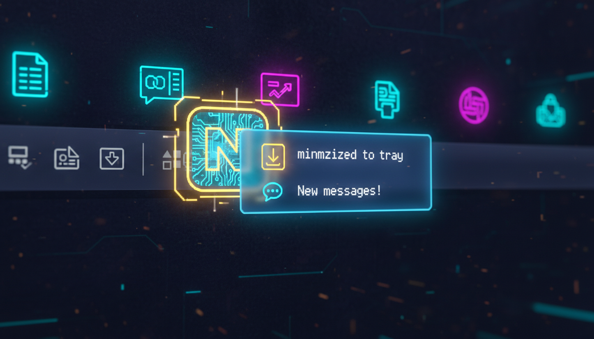

Системний трей, спливаючі підказки, меню

NotifyIcon^ tray = gcnew NotifyIcon();
tray->Icon = gcnew System::Drawing::Icon("app.ico");
tray->Text = "Мій додаток";
tray->Visible = true;
// Контекстне меню трею
ContextMenuStrip^ trayMenu = gcnew ContextMenuStrip();
trayMenu->Items->Add("Відкрити", nullptr,
gcnew EventHandler(this, &MyForm::OnShow));
trayMenu->Items->Add("-");
trayMenu->Items->Add("Вихід", nullptr,
gcnew EventHandler(this, &MyForm::OnExit));
tray->ContextMenuStrip = trayMenu;
// Подвійний клік
tray->DoubleClick += gcnew EventHandler(
this, &MyForm::OnTrayDoubleClick);
// Спливаюча підказка
tray->BalloonTipTitle = "Повідомлення";
tray->BalloonTipText = "Операція завершена!";
tray->ShowBalloonTip(3000);
// Згортання у трей
void OnResize(Object^ sender, EventArgs^ e) {
if (this->WindowState == FormWindowState::Minimized) {
this->Hide();
tray->Visible = true;
}
}